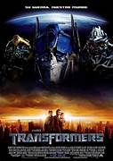

La película está protagonizada por Shia LaBeouf en el papel de Sam Witwicky, un adolescente que se ve envuelto en una guerra entre los heroicos Autobots y los villanos Decepticons, dos facciones de robots alienígenas que pueden esconderse transformándose en maquinaria cotidiana, principalmente vehículos. Los Autobots pretenden recuperar y utilizar la AllSpark (Chispa Suprema), el poderoso artefacto que creó su raza robótica que está en la Tierra, para reconstruir su planeta natal Cybertron y acabar con la guerra, mientras que los Decepticons tienen la intención de utilizarla para construir un ejército dando vida a las máquinas de la Tierra.
